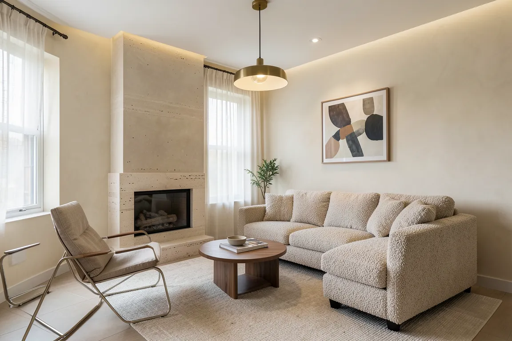

A tonal room of costly materials and no logos. One hue family in cream, oatmeal, taupe and chocolate covers walls and seats; texture, not colour, gives the variety; pairs of chairs and lamps mirror about the fireplace, and hidden light washes the plaster.

Core thesis
Real luxury is the quality of the material and the work, and it does not need to show a name.
Design principles
Use one hue family in 3–5 values, from cream to chocolate; the accent is a darker value of the same hue, not a new hue.
Vary texture, not colour: put at least 4 textures, such as bouclé, cashmere, travertine and walnut, in the seating group.
Mirror pairs of chairs, lamps and side tables about one axis through the fireplace or the bed.
Choose few, large pieces: a deep low sofa of 260–300 cm and a rug of 300 x 400 cm that holds the whole group.
Hide the light sources: cove light, picture light and lamps with opaque shades; no bare bulb is in view.
Use honed, brushed and matt finishes; satin is the highest sheen.
Keep clear routes of 110 cm or more, so that the room never feels full.